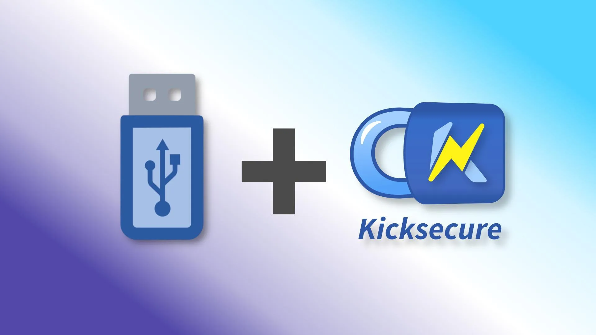
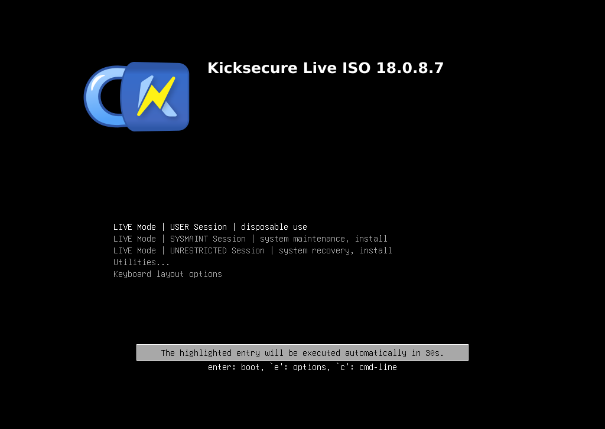
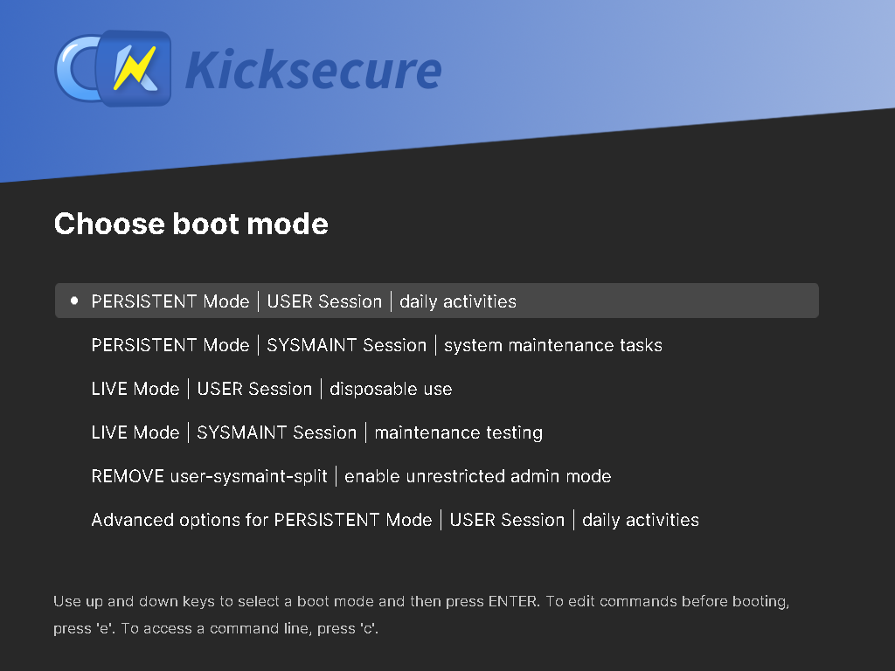
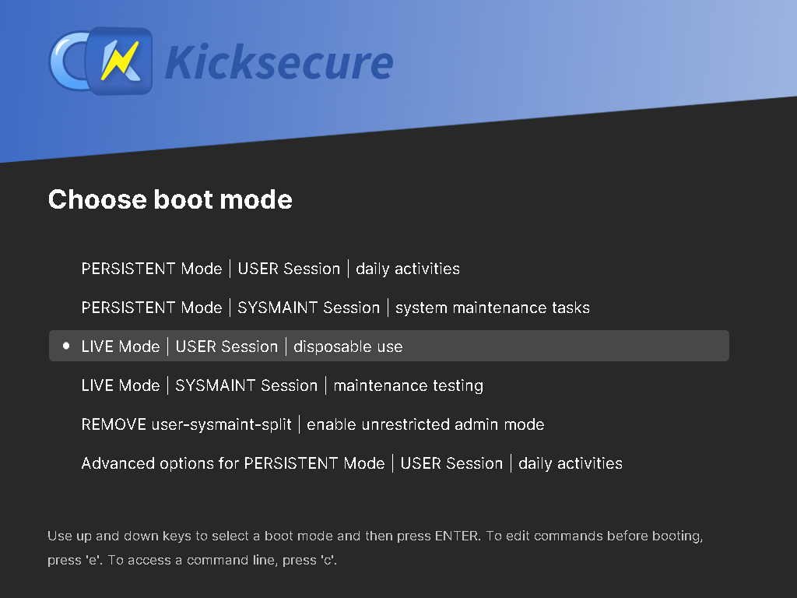

We believe security software like Kicksecure needs to remain Open Source and independent. Would you help sustain and grow the project? Learn more about our 14 year success story and maybe DONATE!
ISODocumentationDebianPrevious page: ISOIndex page: DocumentationNext page: DebianInstallation of Kicksecure on a USB

Kicksecure can be used as a plug-and-play operating system on a USB data stick. It comes in two flavors: a non-persistent Live USB system, and a persistent operating system booted from USB.
Introduction
Kicksecure can be easily and comfortably booted and used from a USB data stick. No need to install it on your hard drive. Once Kicksecure has been flashed to a USB data stick, simply plug in the stick, boot Kicksecure, and you are ready to work with Kicksecure for tasks that require robust security. There are two options available.
- A non-persistent (live) USB operating system that forgets all user-created data after shutdown.
- A persistent USB operating system which saves your data on the USB drive itself.
Installation / Use
The following options are available for Kicksecure on USB.
1 Choice.
Choose an option below to view the matching instructions:
ISO LIVE Mode
To set up ISO Live Mode on a USB data stick, follow these instructions.
2 On the ISO page, read the Download, Create Live USB section.
3 Follow the instructions to flash the ISO to a USB stick.
4 Boot from the USB stick.
Figure: Kicksecure ISO Live Mode showing the GRUB bootloader

5 Done.
PERSISTENT Mode
To set up Kicksecure installed on a USB data stick (PERSISTENT Mode), follow these instructions.
2 Notes.
3 On the ISO page, read the Download, Create Live USB section.
4 Follow the instructions to flash it to a USB stick ("LIVE-USB").
5 Boot from the USB stick.
Figure: Kicksecure ISO Live Mode showing the GRUB bootloader
6 On the desktop, click "Install to Hard Drive" and select the second USB device ("PERSISTENT-USB") as the installation target.
7 Power off. (Shut down the live session.)
8 Remove the USB stick that contains the Kicksecure installer ISO ("LIVE-USB").
9 Keep the USB with the installed Kicksecure ("PERSISTENT-USB") connected.
10 Boot from the installed Kicksecure USB stick ("PERSISTENT-USB").
Figure: Persistent Mode Boot - User
Session

11 Done.
Advanced users: There is also a different option for advanced users. Click "Learn More" to open.
Advanced users can also create a Kicksecure USB stick by following these instructions:
- Take a USB data stick with at least 16 GB of space.
- Install Debian on the USB stick. Instructions are available on the Debian Wiki. Additional online guides explain how to install Debian on a USB.
- Morph the Debian installation into Kicksecure. Instructions for this can be found in our Kicksecure for Debian installation guide.
- Done.
OPT-IN LIVE Mode

This mode boots a Kicksecure USB installation in Live Mode. This option can be useful in certain situations.2 Follow all the steps listed under #PERSISTENT_Mode.
3 During the boot process, in the GRUB boot menu, choose "Live Mode".
4 Done.
Advantages of Kicksecure on USB
Simple to Try Out: An easy way to try out Kicksecure without needing to install Kicksecure on your computer.
Way easier than Dual Boot: It is much easier to install an operating system on a separate USB drive than attempting to set up a dual boot on the same hard drive.
Better Security: A higher level of security can be achieved by installing the host operating system(s) on dedicated (encrypted) external disk(s), such as a USB flash drive or similar media. [1] Compared to dual booting, physical external media reduces the risk of malware running on other operating system(s) infecting the Kicksecure host operating system.
Can be unplugged and securely stored: When Kicksecure disk(s) are not in use, they can either be removed or hidden.
See also
Footnotes
- For example, eSATA or FireWire. FireWire should generally be avoided for security reasons: * https://louwrentius.com/firewire-the-forgotten-security-risk.html * https://en.wikipedia.org/wiki/IEEE_1394#Security_issues
Categories: Documentation